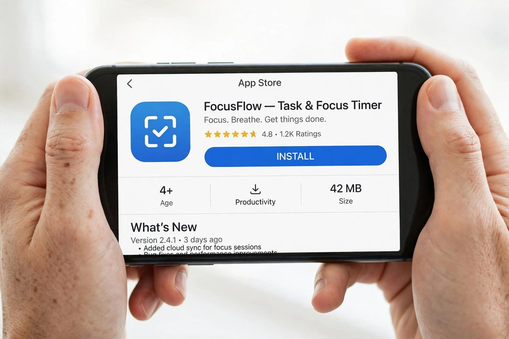

Text Effects in CapCut

Text is the most-read part of a short video — more people read your captions than hear your voice. Here is how to make text in CapCut that is bold, readable and perfectly timed.
Adding text: the basics
Tap "Text" in the bottom toolbar, then "Add text", and type. The text appears as a layer on the timeline — drag its edges to set how long it stays on screen, and drag it on the preview to position it. Double-tap the text to edit the words. For titles, keep it to three to six words: "3 mistakes beginners make" reads instantly, while a full sentence needs too long on screen. Place titles in the upper-middle or centre of the frame, and captions in the lower third, so they never fight each other.
Fonts: pick one and stick to it
CapCut has dozens of fonts, and the temptation is to use a different one every video. Do not. Pick one bold font for titles and one clean font for captions, and use them in every video — that consistency becomes part of your style, and viewers start recognising your videos before they read them. Bold, chunky fonts work for energetic content; thin, elegant fonts suit fashion, travel and luxury. Avoid script fonts for anything longer than two words, and test every font at full screen: if it is hard to read at arm's length, it is the wrong font.
Animation: entrance, emphasis and exit
Every text layer in CapCut has animation options: how it enters, how it behaves while on screen, and how it leaves. A pop-in or slide-in entrance works for hooks; a gentle fade suits calm content. The most useful animation is the loop "bounce" or "pulse" on a single key word — it draws the eye to exactly the word you want remembered. Keep entrances under half a second, and give text a clean exit (a quick fade or slide-out) instead of letting it vanish mid-sentence. Text that appears and disappears abruptly feels unfinished.
Kinetic type: text that matches the beat
Kinetic type means each word appears exactly when it is spoken, often with a scale pop on the stressed word. It is the style that dominates TikTok talking videos. The fastest way to build it is with auto captions in the word-by-word highlight style, then style the captions bold with a coloured highlight on the active word. For manual kinetic type, split your sentence into one text layer per word, place each layer at the right moment on the timeline, and add a small scale keyframe so each word pops in. It takes a few minutes per sentence, and it is worth it — kinetic type measurably improves retention.
Colour, outline and shadow
White text with a thick black outline is readable on almost any background, which is why it is the default for short video. If your video is bright, use black text with a white outline instead. A soft drop shadow helps text sit above busy footage, and a solid background box behind the text guarantees readability at the cost of style. Use colour sparingly: one accent colour for the key word in a sentence, the rest white. Two colours in one title is emphasis; five colours is a rainbow.
Timing text to the voice
Text should appear a fraction before the word is spoken, not after — viewers read faster than they listen, and text that lags feels broken. Drag each text layer so it starts just before its word and ends just after it. For titles that summarise a whole point, leave them on screen for the full length of that point, then cut them when the topic changes. Watch the video back with the sound off: if you can follow the whole argument from the text alone, your timing is right.
Frequently asked questions
How do I make text bigger in CapCut?
Select the text layer, pinch to scale it on the preview, or change the font size in the style panel. Keep titles large — they should fill a third of the frame width.
Can I use my own fonts in CapCut?
On some versions you can import custom fonts from your device. Otherwise, use the built-in library — it covers most styles.
Why does my text look blurry after export?
Usually the export bitrate is too low, or the text is too small. Increase the font size and export at high quality.
Download CapCut — official app
Get the real CapCut free from your official app store. No modified files, no risk.
Try the tools
Aspect Ratio Calculator
Presets for TikTok, Reels, Shorts and YouTube. Enter one side and get the matching resolution instantly.
Bitrate & Export Size Calculator
Work out how big your exported video will be from its length and bitrate — or the bitrate for a target size.
Caption Timing Helper
Paste your script and split it into timed caption lines with start and end timestamps, ready to use.
Template Idea Generator
Pick a niche and a mood and get a complete edit idea: hook, style, transitions and music vibe.
More guides
 What Is CapCut Mod APK?
What Is CapCut Mod APK? CapCut Premium vs Free
CapCut Premium vs Free Is CapCut Mod APK Safe?
Is CapCut Mod APK Safe?
How to Install CapCut Officially Best CapCut Templates in 2026
Best CapCut Templates in 2026 Auto Captions in CapCut
Auto Captions in CapCut Keyframe Animation in CapCut
Keyframe Animation in CapCut CapCut Transitions Tutorial
CapCut Transitions Tutorial Best Video Quality Settings
Best Video Quality Settings Best Export Settings in CapCut
Best Export Settings in CapCut CapCut for TikTok
CapCut for TikTok CapCut for Instagram Reels
CapCut for Instagram Reels Background Removal in CapCut
Background Removal in CapCut Speed Ramping in CapCut
Speed Ramping in CapCut Filters and Effects in CapCut
Filters and Effects in CapCut Audio Editing in CapCut
Audio Editing in CapCut CapCut vs KineMaster
CapCut vs KineMaster CapCut for Beginners
CapCut for Beginners Trending Edits Tutorial
Trending Edits Tutorial